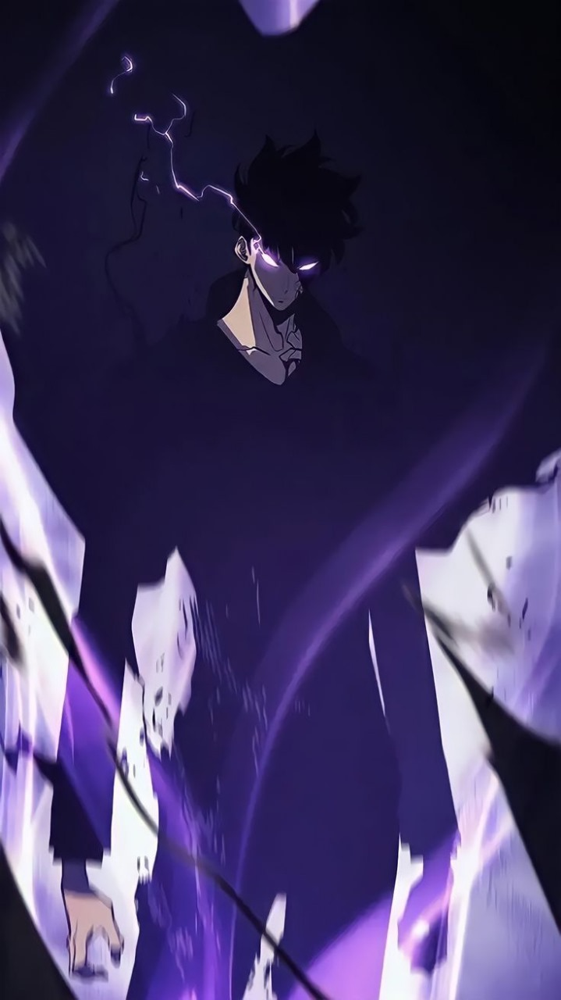

Biography
Once a weak human being, struggling to survive in the ever evolving world.
After many near death experiences but never giving up, Sung Jin-woo was given the opportunity to join the "player system" which allowed him to continuously grow stronger and evolve into the powerful being he is now
The abilities and skills he inherited from the previous Shadow Monarch "Ashborn"
These ablities and his will to grow stonger to protect those he loves pushed him to defeat all of the other monarchs, "Antares", "Baran", "Rakan", "Sillad", Tarnak", "Legia", "Querehsha", "Yogumunt", and save his world
He then reset the world using the Cup of reincarnation, to try once more to save everyone, he took the burden of saving the world upon himself and his shadow army, after 2 years he finished the war amongst the monarchs and returned home
He is now a detective and protects the world using his powers in secret
Powers & abilities
- Immeasurable Strength: Jinwoo possesses a tremendous amount of physical strength. Even before obtaining his true power,
he was strong enough to critically damage the Statue of God with just a few punches to its face and beat Thomas Andre,
one of the five National Level Hunters, to the brink of death with just his bare hands. Upon being revived by Ashborn
and receiving the full extent of the Shadow Monarch's powers, Jinwoo's strength was increased to the point that he was
able to effortlessly repel Sillad's attacks with one hand, kill Rakan in just four blows, and hold his own against
Antares, the strongest and oldest of the nine Monarchs, in battle. After spending 27 years waging war against the
Monarchs in the revised timeline, Jinwoo has appeared to have grown even more powerful than before, as shown by how he
was able to kill Antares completely by himself instead of having to rely on the Rulers for support
-
Immeasurable Speed: Jinwoo is unfathomably fast and can move at speeds so great that most opponents are unable to track
his movements. As a testament to this, he was agile enough to keep up with Sillad's attacks during their second
confrontation and upon obtaining his true power, was able to strike at Rakan with such speed that the latter didn't even
realize that he'd been attacked until after Jinwoo cut off one of his legs.
-
Immense Durability: Jinwoo is incredibly resilient to physical damage. He was virtually unharmed when the Ant King
punched him in the face, only sustaining a small cut on his lip, and was physically unscathed after Baran smashed him
into the ground with great force.
-
Combat Mastery: Jinwoo is a master of melee-based combat and his fighting skills are so refined that he can hold his own
against enemies with far more combat experience than he does with little trouble. This was first demonstrated during his
battle with Kandiaru in the Double Dungeon; despite the fact that his opponent had been alive for hundreds of years and
fought against numerous opponents in his time, Jinwoo was still able to match him in battle and eventually overpower him
altogether. Later on, Jinwoo was also able to keep up and defend from Sillad's attacks, despite the fact that the latter
had his Spiritual Body Manifestation activated and eons of fighting experience under his belt, and probably would've
been able to land a killing blow had Rakan not ambushed him from behind.
-
Agelessness: As an effect of having inherited Ashborn's powers, Jinwoo no longer ages naturally and has to biologically
alter his body to look the age he wants.[7] As a result, by the end of the series, he only appears to be in his thirties
when he has actually been alive for over 80 years.
-
Accelerated Development: Jinwoo's most astonishing ability is his explosive growth rate, a power unlike any other in the
world. Not only does he grow stronger with every battle, but he also receives a massive boost in strength with each
victory that he achieves. As a result of this, it only took him a few months of intensive training with the System to
become one of the strongest hunters in Asia.
-
Umbrakinesis: Jinwoo possesses absolute control over shadows and darkness, and can reshape them into whatever form he
desires, as displayed when he created a layer of black armor made of shadows onto his body.
-
Memory Manipulation: Jinwoo can manipulate the memories of other humans to a certain extent by making physical contact
with them. So far, he has been shown to be able to erase certain memories from their minds, grant them their memories of
the original timeline, and allow them to see into his own memories, as he did with Woo Jinchul to inform him of the
existence of the Rulers and the Monarchs.
-
Hypnosis: Jinwoo can hypnotize people into following the orders that he gives them by snapping his fingers, as displayed
when he hypnotized Kim Chul into letting him go and becoming a better person when they encountered each other in the new
timeline. [9] However, since he has only ever been shown using this ability once, the limitations to it remain unknown.
-
Unlimited Inventory: Jinwoo can store an unlimited number of items in his shadow and extract any number of those items
for his own use at any point in time.
-
Monster Language Fluency: Jinwoo can speak and understand monster tongue, which he uses to communicate with his shadow
soldiers and the enemy monsters that he encounters in battle.
-
Indomitable Will: Due to his loving relationship with his family and his intense drive to become strong for their sake,
Jinwoo has an extraordinary level of willpower. He has exemplified this trait even before he became the Player of the
System, as shown by how he spent four years going on dungeon raids to financially support both his sister and his mother
even though he nearly died on almost every raid he ever went on. Jinwoo's resolve to continuously put his life as risk
for the welfare of his family was also ultimately the reason why Ashborn selected him as his successor, as he knew that
Jinwoo would never quit fighting for his family no matter how high the odds were stacked against him.
Skills
Passive
-
Will To Recover: Jinwoo is able to regenerate from any kind of damage done to his body with the exception of fatal
wounds, such as being stabbed through the heart. This also includes lost limbs, as shown by how Jinwoo was able to
completely regenerate his right leg after he lost it during the first Double Dungeon Incident.
-
Longevity: Jinwoo is immune to all diseases, poisons, and any abilities that can be harmful to his status. His
regeneration speed is also far faster than a normal human's and increases exponentially when he sleeps.
-
Detoxification: Jinwoo's body is able to automatically cleanse itself of any poisons once they are detected in his
bloodstream. Unfortunately, alcohol is considered to be a poison and as a result, Jinwoo can't get drunk.
-
Tenacity: If Jinwoo's health drops below 30% in battle, any further damage that he receives will be reduced by 50% in
order to keep him alive.
-
Advanced Dagger Techniques: If Jinwoo uses his daggers in battle, any damage he inflicts on his opponent will be
increased by 33%.
Active
-
Stealth: Jinwoo is able to camouflage with his surroundings and hide all traces of his presence, essentially turning
himself both physically and magically invisible.
-
Bloodlust: Jinwoo is able to magically intimidate an enemy combatant into submission, inducing intense fear into those
who are targeted by this technique and decreasing their stats by 50%. It can also be used on multiple opponents at once.
-
Quicksilver: Jinwoo is able to increase his speed by 30% for a short period of time.
-
Mutilation: Jinwoo aims for a target's vital points before slashing away at them with his daggers, inflicting critical
damage.
-
Dagger Rush: Jinwoo barrages a target with his daggers from all directions.
-
Ruler's Authority: Jinwoo is able to move and control objects via telekinesis. He can also use this skill on the air
around him, enabling him to move and dodge attacks while airborne.
-
Dragon's Fear: Jinwoo releases a mana-infused shout from his soul, driving anyone weaker than him into a state of
intense despair and panic.
Monarch Skills
-
Shadow Extraction: Jinwoo is able to extract shadows from the corpses of his enemies and add them into his army.
-
Shadow Preservation: Jinwoo is able to preserve his shadows in storage and monitor them by perceiving their senses.
-
Shadow Exchange: Jinwoo is able to use shadows as portals to travel vast distances in an instant.
-
Monarch's Domain: Jinwoo is able to increase the strength of all of his active shadows by 50% in battle.
Affiliations
-
Used to be a freelance hunter
-
After joining the Player of the System, became the leader of the Ahjin Guild